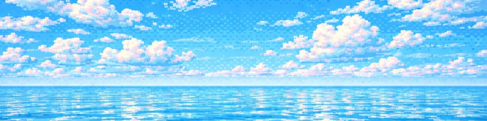

You’re
in
calloused
hands
JOFO DOMINGO
Design
My Story
Leadership
Reading
Writing
On AI
Resume
J
Menu
K

01 — Project
03 — Project
02 — Project
04 — Project
01 — My Story
03 — My Story
02 — My Story
04 — My Story
01 — Leadership
03 — Leadership
02 — Leadership
04 — Leadership
01 — Reading
03 — Reading
02 — Reading
04 — Reading
01 — Writing
03 — Writing
02 — Writing
04 — Writing
01 — On AI
03 — On AI
02 — On AI
04 — On AI
Go to
Design
My Story
Leadership
Reading
Writing
On AI
Links
Resume
⌘J
Contact
Email
hello@yourdomain.com
No results